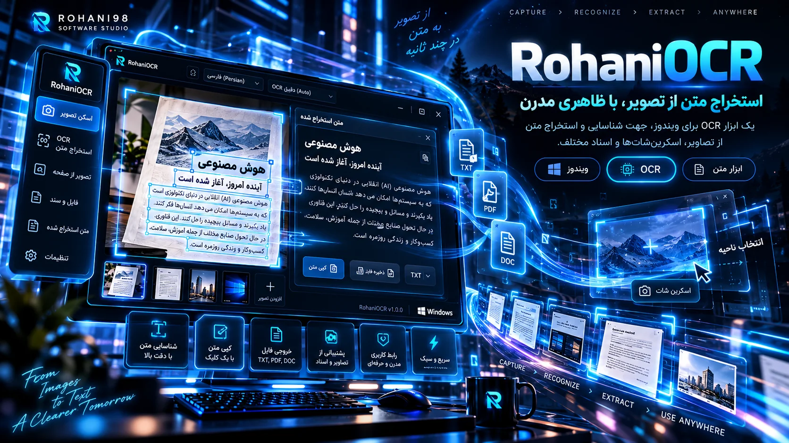

تشخیص نوشته
خواندن نوشتههای موجود در تصاویر و اسناد تصویری.
ابزار ویندوز برای استخراج متن از تصویر و اسناد تصویری؛ سریع به متن موردنیاز نزدیک شوید. نمایش این صفحه مفهومی است و ممکن است با رابط واقعی برنامه تفاوت داشته باشد.

خواندن نوشتههای موجود در تصاویر و اسناد تصویری.
کمک به تبدیل اطلاعات تصویری به متن برای کارهای روزانه.
فایل نصب رسمی برنامه با دکمه دانلود دریافت میشود.
Windows · حجم تقریبی 21.2 MB · دانلود مستقیم فایل نصب